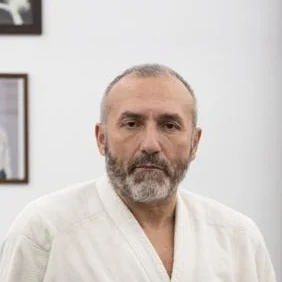

L’Aikido è un’arte marziale che trae le sue origini dalle più antiche arti marziali giapponesi.
Il suo Fondatore, il Maestro Morihei Ueshiba (1883-1969), studiò tutte le arti marziali allora esistenti e compì al tempo stesso profondi studi religiosi. Il suo insegnamento un tempo segreto e rivelato soltanto a pochi discepoli per lo più nobili, si diffuse in Occidente solo nella seconda metà del secolo scorso, divenendo un metodo per il raggiungimento dello sviluppo, integrazione ed utilizzazione completa delle energie fisiche, mentali e spirituali dell’uomo.
Possiamo riconoscere più di una scuola di questa arte marziale. Quella seguita nel Dojo di Pranavia, la Buikukai, letteralmente Scuola Evoluta, fu sviluppata dal M° Hirokazu Kobayashi, allievo diretto del Fondatore e si distingue per la posizione eretta del corpo, l’utilizzo del suo profilo e del movimento libero dei polsi (meguri).
L’Aikido comprende tecniche in piedi (tachiwaza), in ginocchio (hanmihantachiwaza), di immobilizzazione a terra (suwariwaza), a mani nude e con le armi: tanto (coltello), jo (bastone), bokken (spada di legno), contro uno o più avversari, ma esso non è solo una sequenza di tecniche: l’Aikido è infatti una educazione del corpo a gestire il proprio movimento nello spazio circostante. L’Aikido è “Movimento secondo le regole assolute dell’Universo” (H. Kobayashi).
La validità dell’Aikido come attività di movimento gli è riconosciuta sia dalla Medicina Ufficiale Occidentale che da quella Tradizionale Orientale. Uno studio statunitense del 1995 lo pone infatti al 12° posto, subito preceduto dal nuoto, in una classifica delle 50 attività sportive che danno più benefici e meno lesioni traumatiche. Al tempo stesso per la Medicina Orientale i suoi movimenti, le tecniche, le prese e le cadute costituiscono massaggi e stimolazioni su punti chiave dei “meridiani energetici” (canali di scorrimento dell’energia).
“Non esiste nemico nell’Aikido. Vi sbagliate se pensate che il Budo (arte marziale in senso spirituale) significhi avere avversari e nemici ed essere forti e farli cadere.
Non ci sono né avversari né nemici per il vero Budo…Il Budo è essere una cosa sola con l’universo…L’Aikido è armonizzare sé stessi con il movimento dell’universo…” (M. Ueshiba)

Il Maestro
Antonio D’Elia
Nato a Salerno nel 1961, il Maestro Antonio D’Elia conosce l’Aikido per caso osservandone gli allenamenti nella palestra del vecchio campo sportivo “Vestuti” dove praticava atletica (mezzofondo). Inizia così la pratica dell’Aikido sotto la guida del M° Antonucci nel 1978 continuando gli allenamenti di atletica che dopo qualche anno lascerà del tutto.
Trasferitosi a Firenze nel 1980 per motivi di studio (Università di Medicina e Chirurgia), continua la pratica sotto la guida prima del M° Hosokawa che, prima di stabilirsi in Sardegna, insegnava a Castelfiorentino e poi del M° Giannini e, nel 1984, consegue il 1° Dan. Nel 1986 consegue la laurea in Medicina e Chirurgia.
Trasferitosi a Milano nel 1988 per lavoro, continua la pratica prima con il M° Masetti e quindi con il M° Ruffoni che lo avvicina alla scuola del M° H. Kobayashi (di cui aveva sentito parlare dal M° Antonucci a Salerno).
Continua a leggere
Nel 1990 inizia così a seguire assiduamente il M° Savegnago, allievo diretto del M° Hirokazu Kobayashi, che aveva conosciuto ad uno stage a Vicenza da lui diretto, sia a lezione a Cornedo Vicentino (tutti i martedì), sia negli stage in Italia ed all’estero, e dal 1991 al 1996 insegna c/o il Dojo Ko Sen di Milano.
Nel 1992 consegue il 2° Dan e, nel 1996, il 3° Dan.
Intanto nel 1991 consegue c/o l’Università di Pavia, la specializzazione in Ortopedia e poi, nel 1995, quella in Medicina dello Sport.
La formazione medica di questi anni si struttura in lui in una sorta di simbiosi con la pratica dell’Aikido con vantaggio per entrambe le attività: l’aikido aumenta in lui la capacità di “sentire le articolazioni” durante il quotidiano lavoro ospedaliero, la Ortopedia e la Medicina dello Sport lo aiuteranno nella comprensione della chinesiologia in Aikido.
Trasferitosi a Roma nel 1996, cerca di diffondere la pratica dell’Aikido Buikukai (la scuola del M° H. Kobayashi) con lezioni e dimostrazioni in vari dojo e stage e nel 1998 apre la prima scuola nel Lazio ove si pratica Aikido secondo gli insegnamenti del M° H. Kobayashi.
Nel 2004 consegue il 4° Dan e da quell’anno fino al 2011 aderisce alla Fondazione Buikukai d’Europa (Zaidan Aikikai) divenendone prima il Segretario della Provincia di Roma e poi, nel 2005, il Segretario Regionale del Lazio.
Dal 2004 inizia ad insegnare in Messico lo stile Buikukai con stage a cadenza annuale fino al 2011, chiamato da un suo allievo che si era lì trasferito.
Nel 2007 ottiene la qualifica di Aikido Kyoshi (Professore d’Aikido) della Buikukai d’Europa e assume l’incarico di Coordinatore Tecnico della Buikukai del Messico (allora associata alla Buikukai d’Europa) che manterrà fino al 2011.
Nel 2011 fonda con altri maestri la Accademia Aikido Buikukai Hirokazu Kobayashi (AAHK) coordinata dal M° Antonucci che aderisce alla Kokusai Aikido Kenshukai Kobayashi Hirokazu Ha diretta dal M° Andrè Cognard VIII Dan Hanshi, suo caposcuola.
Dal 2012 è membro riconosciuto della Dai Nippon Butokukai (DNBK), la più antica e prestigiosa associazione giapponese di arti marziali.